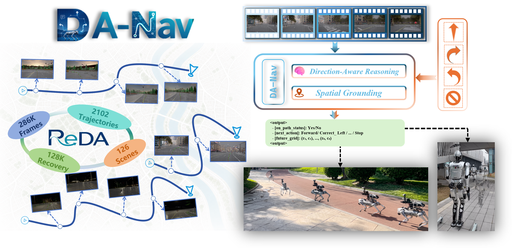

Quadruped, Olympic Forest Park
A Unitree Go2 follows live map directions across a crowded plaza and into the park greenway, including long straight segments and upcoming turns.
Direction-Aware City-Scale Vision-Language Navigation
* equal contribution † corresponding authors
1 ShanghaiTech University
2 NLPR, Institute of Automation, CAS
3 University of Chinese Academy of Sciences
4 Institute of Computing Technology, CAS
5 XYZ Embodied AI

DA-Nav turns a coarse commercial-map direction into a local target on the egocentric image, then recovers when the robot drifts. The same policy transfers, without real-world fine-tuning, to a quadruped and a humanoid.
A direction-aware training set: the same sparse instructions a phone map already gives, plus the recovery after the robot leaves the path.

ReDA is collected automatically in CARLA. A controller follows the expert route, then a steering perturbation pushes the robot aside. Once the lateral error passes 0.35 m, the logger records the way back and drops the unstable frames in between. Each kept frame carries a chain-of-thought label: whether the robot has left the path, which action corrects it, and the next six targets on the egocentric grid.
The instructions stay coarse on purpose: forward, turn left, turn right, or stop. That is what commercial navigation already outputs, and it is what the policy is trained to ground.
| Dataset | Instruction | Action space | Supervision |
|---|---|---|---|
| Touchdown | Fine-grained language | Graph nodes | Expert only |
| CityWalker | Path-level | 3D waypoints | Expert only |
| NaVid / NaVILA | Path-level / mixed | Discrete commands | Expert only |
| ReDA (ours) | Direction-based | 2D image grid | Expert + recovery |
DA-Nav is a LoRA-finetuned Qwen2.5-VL-7B. It reads the recent view and a direction, then writes a short chain of thought as cells on the image.

First the model says whether the robot is still on the reference path: yes or no.
Then it picks a command: forward, turn left or right, correct left or right, or stop.
Last, it selects six cells for the next three seconds, sampled at 2 Hz on the image plane.

Zero-shot closed-loop runs. A phone navigation app supplies the direction; the robot only sees egocentric RGB.
A Unitree Go2 follows live map directions across a crowded plaza and into the park greenway, including long straight segments and upcoming turns.
The same policy, with no real-world fine-tuning, walks a Leju humanoid through an outdoor park route, from open plazas onto the surrounding streets.
Closed-loop walking along a campus sidewalk and road, holding the route through building frontage and marked turns.
Commercial navigation tools already plan the global route. DA-Nav only consumes a discrete local instruction: forward, turn left, turn right, or stop.
The model reads a short image history, decides whether it has drifted, and picks the next target on an egocentric grid instead of regressing 3D waypoints.
ReDA supplies both expert and recovery trajectories in CARLA. The resulting policy transfers zero-shot to a quadruped and a humanoid.
Closed-loop comparison on 239 CARLA evaluation routes. CityWalker, ViNT, NaVid, and NaVILA are fine-tuned on the same ReDA training split. Correction success is the fraction of deviations the policy brings back inside the safety margin.
| Method | SR (%) ↑ | SPL ↑ | CSR (%) ↑ |
|---|---|---|---|
| CityWalker† | 41.42 | 41.33 | 36.93 |
| ViNT† | 52.72 | 52.00 | 44.65 |
| NaVid† | 17.99 | 17.99 | 19.71 |
| NaVILA† | 22.18 | 22.18 | 15.28 |
| Zero-shot Qwen2.5-VL | 11.30 | 11.30 | 42.76 |
| DA-Nav (ours) | 59.00 | 58.66 | 98.15 |
† Fine-tuned on ReDA, keeping each baseline’s own architecture and objective. Qwen2.5-VL uses its official weights without that fine-tuning.
Outdoors, over 30 trials in streets and parks, DA-Nav reaches 46.7% success and 76.3% route completion. CityWalker and ViNT reach 23.3% and 16.7% success under the same protocol.
@article{yuan2026danav,
title = {DA-Nav: Direction-Aware City-Scale Vision-Language Navigation},
author = {Yuan, Ye and Chen, Kehan and Yu, Xinqiang and Xu, Wentao and
Wang, Heng and Huang, Libo and Yang, Chuanguang and Huang, Yan and
He, Jiawei and An, Zhulin},
journal = {IEEE Robotics and Automation Letters},
year = {2026},
note = {arXiv:2607.11638}
}